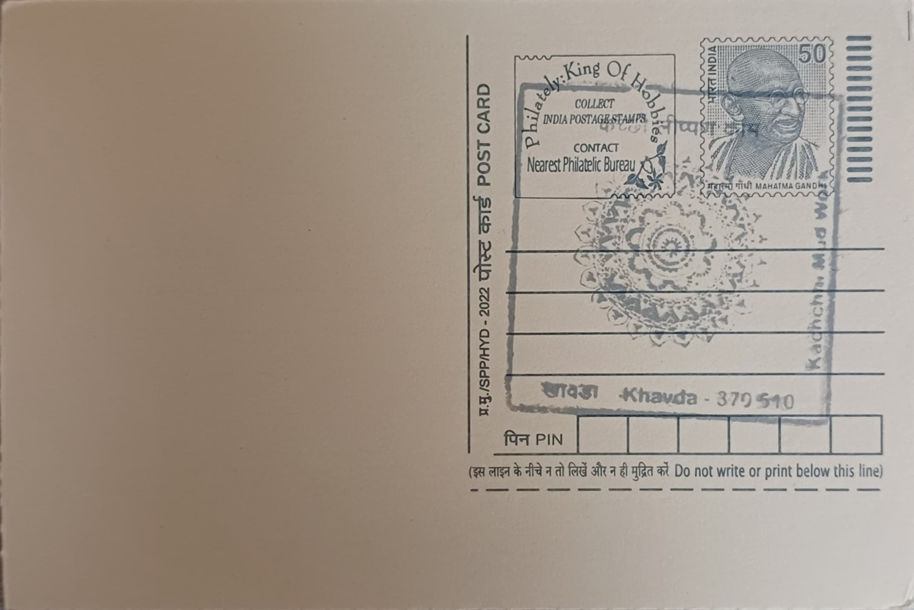

Kachchhi Mudwork
કચ્છી માટીકામ (મડવર્ક)


Kachchhi mudwork takes its name from "lippan," the Gujarati word for the clay-and-dung plaster applied to walls, combined with "kaam," meaning work; the craft is also referred to locally as chittar kaam or laipo in some Kutchi dialects. Its precise origins are not documented in any single founding account, but the technique is understood to have developed among the pastoral and agrarian communities of the Banni grasslands and wider Kutch region as a practical response to the area's harsh desert climate, with the mud-dung mixture chosen for its ready availability and its insulating properties against extreme heat and cold.
The craft belongs to the broader family of Indian mural and relief arts and is distinguished by its combination of sculpted low-relief ornamentation with inlaid mirror work, locally called abhla or aarsi. It holds significance as both a domestic craft and a marker of community identity, historically practised by Rabari, Mutwa, Meghwal, and Marwada Harijan artisans who migrated into Kutch from neighbouring Sindh and Rajasthan over the past several centuries. In recognition of its distinct regional character and the specialised skill required to produce it, Kachchhi mudwork was granted a Geographical Indication (GI) tag in 2023, formally linking the craft to its Kutch place of origin.
The technique is carried out almost entirely by women, who prepare a base of local clay mixed with camel or donkey dung and water, then hand-shape it into raised geometric, floral, or animal motifs directly onto wall surfaces, door frames, and storage niches of the circular mud dwellings known as bhungas. Small mirror pieces are pressed into the wet relief while it is still pliable, catching available light and brightening otherwise dim interiors lit only by oil lamps or filtered daylight. Common motifs include peacocks, camels, trees, and repeating lattice patterns, with designs often built up freehand without preliminary sketching, relying instead on patterns passed down within families and communities.
A notable feature of the craft is its dual function: beyond its decorative role, the mud-dung relief provides a measure of structural reinforcement and thermal regulation for the bhunga's walls, a quality that gave the art practical value long before it attracted outside aesthetic interest. The 2001 Bhuj earthquake, which devastated large parts of Kutch including many traditional bhunga settlements, drew renewed attention to vernacular Kutchi crafts during the subsequent rehabilitation period, and lippan artisans were among the craft communities supported through revival and livelihood initiatives in the years that followed.
Today Kachchhi mudwork has moved well beyond its original architectural setting, with artisans producing portable panels, wall hangings, and home-décor pieces for sale through craft fairs, cooperatives, and the annual Rann Utsav festival held in the Banni and White Rann areas of Kutch, often supported by Gujarat state tourism and handicraft promotion schemes as well as non-governmental craft-documentation projects. These market-facing adaptations have become a supplementary income source for rural households in villages such as Ramdevnagar and other Banni settlements, where the craft is taught informally from mother to daughter. The art form remains closely tied to its place of practice near Khavda in Kutch district, an area still associated with some of the most active lippan-making communities in the region.
| Date of Introduction | February 2, 2021 |
|---|---|
| Address | Sub Postmaster, |
| Khavda SO, | |
| Kachchh (dt.), Gujarat - 370510. |